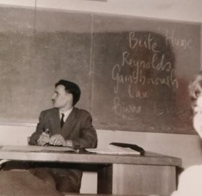
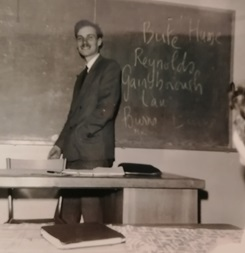
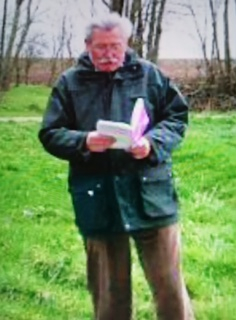
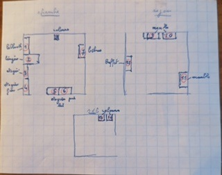
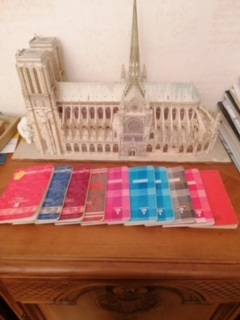
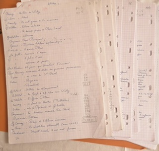
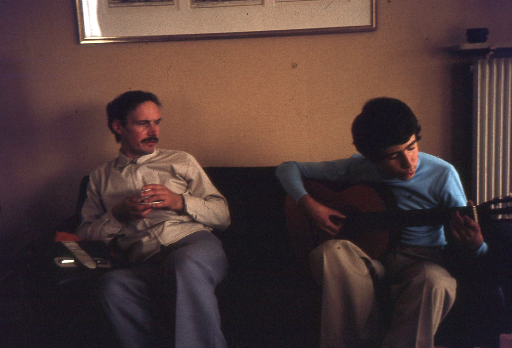

Notice biographique - Biographical Notice

Comme le reste de ma famille, je n'ai connu de mon frère Michel, de son vivant, que ce qu'il a bien voulu qu'on en connaisse.
Il était né le 27 janvier 1933, deuxième enfant de Paul et Hélène Souchon, mes parents. Mon père était ingénieur électricien. Ses intérêts se limitaient aux choses techniques. Ma mère avait été secrétaire à Nantes, sa ville natale, puis sa vie avait été entièrement consacrée à élever les cinq enfants qu'elle mit au monde entre 1930 et 1945.
La famille habita au début à Paris, dans le 15ème arrondissement, celui de la Tour Eiffel, jusqu'en 1938, avant de s'installer dans la banlieue ouest de Paris, à Viroflay, près de Versailles, où mes parents, avec la venue d'une seconde fille, avaient fait construire un pavillon sur un petit terrain à la lisière du bois de Meudon, face à un manoir du 19ème siècle entouré d'un très beau parc. Cet environnement allait avoir un profond impact sur la créativité du poète.
Le jeune Michel alla à l'école de Viroflay, puis, vers la fin de la guerre, entra au lycée Hoche de Versailles où il fit des études littéraires comprenant Français, Latin, Espagnol, Anglais et Histoire, pour ne parler que des disciplines où il se montrait particulièrement brillant. Un jour mon père fut convoqué dans le bureau du Proviseur qui voulait le prier de ne plus rédiger les rédactions à la place de son fils. Mais entre temps Michel avait convaincu ses maîtres, par des dissertations faites en classe qu'il était bien l'auteur de chefs d'œuvre et non son père. Le proviseur s'excusa et prophétisa : « Monsieur, si votre nom est connu un jour, vous le devrez à votre fils Michel ». La prophétie ne s'est pas réalisée à ce jour.
Elle ne le sera jamais, en vérité, puisque Michel s'est choisi le pseudonyme de « Michel Galiana ». Cette anecdote aurait dû éveiller l'attention de mes parents.
Mais Michel était un enfant timide, sans ascendant sur les autres, handicapé par une voix qui avait incorrectement mué à la puberté. De ce fait, il parlait peu. Sa seule activité était la lecture et on le voyait lire du soir au matin. Notre père essaya bien de le raisonner pour le ramener à la « norme », mais Michel faisait peu de cas de ses terribles remontrances.
Il y eut cependant des moments de bonheur dans cette existence terne, en particulier les grandes vacances qui conduisaient la famille à Nantes chez nos grands-parents maternels. Ils habitaient une petite maison couverte de lierre que jouxtaient un verger, un potager et une petite vigne. Mon grand-père faisait son propre vin que ses petits-enfants refusaient de boire tant il était mauvais. C'était un personnage pittoresque avec sa longue barbe, un ancien marin qui avait beaucoup voyagé et une forte tête qui avait, soi-disant, pris la tête d'une mutinerie au Tonkin. Il aimait chanter les airs des opéras français de sa jeunesse que Michel écoutait avec délice. Le port de Nantes, encore accessible aux grands bateaux était un lieu propre à enflammer l'imagination, ainsi que les monuments qui témoignent de la splendeur des Ducs de Bretagne. De nombreux poèmes célèbrent cet heureux temps.
Michel entra vers 1952-1953 à la Sorbonne où il étudia l'histoire et la géographie et obtint la licence. Il savait que son infirmité vocale et sa timidité étaient des handicaps sérieux pour une carrière d'enseignant. C'est pourquoi il se présenta à plusieurs concours d'entrée dans des institutions sans lien avec l'enseignement, mais préparant à des professions d'archivistes, de bibliothécaires ou de gestionnaires de musées, comme l'École des Chartres. Son père qui avait pourtant des relations ne lui vint pas en aide pour forcer les portes de ces forteresses bien gardées. Il dut donc se résoudre à préparer le CAPES indispensable pour devenir professeur de l'enseignement secondaire.
Après un interminable service militaire (27 mois, de janvier 1957 à fin février 1960 : c'était l'époque de la guerre d'Algérie), il reçut sa première affectation en 1959 en tant que professeur d'histoire-géographie au Collège national de jeunes filles d'Épernay. Bien qu'on ne l'ait jamais vu se plaindre, on devinait qu'il était très malheureux et qu'il était cruellement chahutté par ses élèves. Pas par toutes cependant : une de ses élèves de 4ème moderne, Monique Grosmaire demeurant à la Gendarmerie d'Aÿ, lui envoya 2 photos prises en classe, avec un mot gentil exprimant l'espoir de l'avoir encore comme professeur l'année suivante.
Un second essai au Lycée international de Fontainebleau où il fut livré à une horde de petits Canadiens et Américains s'avéra une épreuve encore plus terrible.
Finalement le ministère de l'Éducation nationale lui procura un emploi de traitement équivalent, un poste de rédacteur technique dans le département immobilier de la Caisse nationale d'assurance-maladie. Comme l'employé de banque Franz Kafka, c'est à un obscur gagne-pain qu'il consacra plus de trente années de sa vie avant de prendre sa retraite en 1998. Il n'eut pas le loisir d'en profiter longtemps, car il devait succomber à une insolation lors d'un voyage qu'il fit au Mali, le 27 avril 1999, à la grande surprise de ses frère et sœurs qui n'étaient pas informés de son départ.
Il mourut célibataire. Les femmes n'avaient en apparence joué aucun rôle dans sa vie. En réalité, ses poèmes montrent qu'il s'éprit le 29 juin 1953 d'une mystérieuse jeune fille rencontrée ce jour-là et dont le premier poème du recueil « D'un livre d'heures » livre le prénom sous forme d'acrostiche. Par la suite, ses textes le montrent amoureux de bien d'autres femmes mystérieuses qui croisent son chemin d'éternel adolescent.
Ses seules passions semblent avoir été la lecture, l'écoute de la musique et les voyages dans les pays lointains. Il fut un client fidèle des voyagistes et il y a peu de pays qu'il n'ait jamais visités. Ces passions dévorantes pour les livres et la musique classique le conduisirent à bourrer son studio – situé au-dessus du siège de l'entreprise familiale à Viroflay – de livres et de disques du plancher jusqu'au plafond. Mes parents auraient dû lui faire apprendre le piano ou quelque autre instrument, ce qui lui aurait permis de compenser son incommunicabilité pathologique.
Avec les années le beau jeune homme se transforma en un original, bohème et négligé, vivant dans la solitude la plus complète, et s'il fut un spectateur assidu de la vie culturelle de la capitale, c'est toujours seul qu'il allait au théâtre, à l'opéra, au cinéma aux conférences et aux expositions.
Malgré ce style de vie, il était tout le contraire d'un égoïste. Il était la bonté et la générosité mêmes. Bien qu'il se soit soucié comme d'une guigne de l'argent et du prestige social, il accepta d'occuper un poste à la direction de l'entreprise familiale que je dirigeais, uniquement pour assurer la survie de cette dernière, après le décès soudain de notre père en 1976. Plus de cent familles de nos salariés doivent à son abnégation d'avoir conservé leur source de revenus pendant plus de trente ans. Quand il mourut, le fragile équilibre entre les actionnaires fut définitivement détruit et la société dut être vendue.
Bien qu'il plaisantât souvent au cours des réunions familiales, je ne me souviens pas de l'avoir jamais vu pleurer, même à la mort de ses parents. C'était là la conséquence d'une infirmité psychique qui l'empêchait d'exprimer ses plus profondes émotions.
Michel n'était encore qu'un adolescent, lorsque mes parents découvrirent un jour un recueil de poèmes dont il n'avait parlé à personne. Mes parents eurent la mauvaise idée de ne pas respecter le secret dont Michel désirait s'entourer et firent des gorges chaudes de leur découverte. Désormais, Michel sembla cesser d'écrire...

During his lifetime, all anybody knew of my brother Michel, was what he wanted them to know.
He was my parents', Paul and Hélène Souchon, second child, born on 27th of January 1933. My father was a brilliant electrical engineer whose interests were confined to technique. My mother was a secretary born in Nantes in Southern Brittany. She devoted her life to raising her five children born between 1930 and 1945. The family lived at first in the 15th Paris district, not far from the Eiffel Tower till 1938, until they moved to a suburban town, Viroflay, next to Versailles. With the coming of a second daughter, my parents had a bungalow built on a small estate on the edge of the Meudon forest, in front of a stately 19th century manor with a beautifully timbered park. I mention these surroundings since they appear many times in my brother's poetry.
Young Michel went to school in Viroflay and by the end of the second world war was admitted to the highschool 'Lycée Hoche' in Versailles. There he studied humanistic curriculum and excelled in French, Latin, Spanish, English and History.
Once the headmaster summoned my father to his office and reprimanded him for writing Michel's home work essays. But in the meantime Michel had produced other essays written in the class room, proving that he was the true author of these masterworks - not his father. The headmaster apologized and prophesied: "Sir, if ever your name becomes famed, you will have to thank your son Michel for that." My parents did not take this prophecy seriously, and did not give Michel the praise he craved. Michel decided to place the nom de plume Michel Galiana on his poems, thus depriving his family of any part in his fame, and nullifying the prophecy.
But Michel was a shy boy who tended to slouch: his voice never completely broke at the puberty. Therefore he seldom spoke and he hid in his room reading books morning, noon and night. Our father sometimes tried to frighten him into more common boyhood pursuits. But my brother usually ignored these fearsome tirades.
There were however happy spells in this reclusive life. In particular he loved the summer holidays that our family usually spent in Nantes with our grandparents, in their small ivy-covered house. It had an orchard, a vegetable garden and a tiny vineyard attached to it. My grandfather made a wine of his own that we children refused to drink since it was an awful bitter brew. He was a picturesque character with a long beard, a former far-travelled sailor who had allegedly caused a mutiny on a ship in Indochina. He loved to sing old French operatic arias to which Michel listened with rapture. Nantes, at the time still accessible to overseas vessels, was a place likely to fire a poet's imagination, as it has stately monuments depicting the past splendour of the Dukes of Brittany. Several poems by Galiana allude to this happy time.
Michel entered around 1952-1953 Paris University where he studied History and Geography and obtained a Bachelor of arts degree. He knew that his cracking voice and his timidity were huge handicaps for a teacher's career. He applied for a couple of graduate highschools specializing in matters disconnected from teaching like managing museums or historical archives, such as the École des Chartres. This sort of jobs was mostly reserved for friends of people who have influence. Our father had enough influence and might have helped Michel, but he chose not to use it. So my brother resigned to his fate and passed the Certificate of Aptitude to become a teacher in the secondary education system.
After 27 months in military service (from January 1957 to the end of February 1960: France was waging war in Algeria), he was hired for his first real job as a history and geography teacher in a girl College at Épernay, amid the Champagne vineyards. Though he did not complain - he never did - it was evident that he was immensely unhappy because he was cruelly baited and ragged by his pupils. Not by all, however: one of his pupils, Monique Grosmaire, living at the Aÿ Gendarmerie barracks, sent him 2 photos taken in class, with a kind word expressing the hope of having him again as her teacher the following year.
A second attempt at Fontainebleau International College where his antagonists were little Canadians and Americans was still worse.
Eventually the Ministry of National Education found him a replacement job as a "technical redactor" in the real estate department of the National Health Administration. Like the bank clerk Franz Kafka, he depended on this lustreless job for his bread and cheese for over thirty years until he retired in 1998. He did not enjoy a long retirement, since he was to die on a tour to Mali in Black Africa, on April 27, 1999, to the great surprise of his siblings who were not informed of his trip.
He died a confirmed bachelor. Women had apparently played no role in his life. In fact, his poems were to reveal that he fell in love once when he was a teenager with a mysterious girl on 29th of June 1953. The poetry collection "Out of a Book of Hours" gives her first name in the form of acrostic. And his subsequent work shows him again and again infatuated with mysterious girls and women he came across, like an eternal teenager.
His sole passions seemed to have been reading, listening to music and traveling the world. He was a capital customer for tour operators and there was hardly a country in the world he had not visited. Due to his devouring passion for books and classical music his studio apartment situated above the offices of the family firm in Viroflay, was crammed with books and LP records from floor to ceiling. I wish my parents had allowed him to learn to play the piano or some instrument, since he was evidently a profound lover of music and playing an instrument would have been a mean to counteract his pathological incommunicability.
As time went by, the handsome youngster had grown into a self-neglecting shaggy character, as solitary as a barn owl, even if he lavishly availed himself of the cultural opportunities offered by the nearby capital: theatres, opera, cinemas, conferences and exhibitions, which he however always attended alone.
In spite of this solitary way of life, he was by no means an egoist. I seldom met such a generous and good fellow in all my life. Despite his disgust for money and social prestige, he agreed to take a position in the management of the family firm that I ran, to ensure its survival after our father's sudden death in 1976. Over a hundred families of our employees are indebted to his self-abnegation for having maintained their source of income for over thirty years. When he died the fragile balance among the shareholders was shattered and the firm had to be sold.
He often indulged in making jokes at family parties, but otherwise, he did not express his emotions publicly. I cannot remember having seeing him crying even when my parents died. It was the consequence of a psychic disease preventing him from expressing his deepest emotions.
When Michel was a teenager, our parents once discovered one of his hand-written manuscript that he had hidden. Our parents foolishly bragged to our neighbours about their son's talent, instead of respecting his privacy. After that Michel appeared to give up writing...

Après le décès de Michel, deux de mes sœurs fouillèrent son petit appartement de fond en comble et découvrirent une énorme quantité de livres et de manuscrits dans sa chambre où il n'avait jamais laissé entrer personne. Il y avait aussi des boîtes de carton pleines de petits livres d'un certain Michel Galiana qu'un rapide examen révéla n'être autre que notre frère. Ces petits livres avaient été publiés à compte d'auteur entre 1987 et 1993 et, à l'évidence, ces exemplaires avaient été retournés à leur auteur.
Michel avait écrit :
-sous son nom d'état civil, un roman picaresque, « Le jeu des ombres » dans le goût des romans philosophiques de Voltaire, paru en 1966 aux éditions « Paragraphes littéraires de Paris ». J'en avais entendu parler pendant mon service militaire et je dois admettre que je n'y avais pas prêté grande attention.
Michel s'était mis en rapport avec le poète-éditeur-imprimeur franco-argentin José Millas-Martin (1921-2011) en février 1965, un personnage haut en couleur, au style faussement populaire, qui dirigea plusieurs revues de poésie et publia une dizaine de poètes connus. Il participa à la création du prix de poésie François-Villon. Il avait publié son premier recueil de poésie, « Recto verso » en 1961...chez un confrère, Guy Chambelland ! Contrairement à la douzaine d'éditeurs contactés par Michel qui, à une exception près, Flammarion, se contentaient de lui adresser des lettres de refus impersonnelles, José Millas-Martin envoya à Michel une réponse circonstanciée :
La suite de le lettre est plus terre à terre. Le contrat proposé est outrageusement à l'avantage de l'éditeur. Un mois plus tard, la participation de l'auteur était réduite de plus d'un tiers. Il lui faudrait cependant vendre un peu plus de 1300 exemplaires sur les 2.000 mis sous presse pour rentrer dans ses frais. Il s'agissait de livres brochés au format IN-16 Jésus 13,5x18.
-Les 7 ouvrages publiés par la suite le furent également à compte d'auteur, à des conditions extrêmement défavorables chez deux maisons d'édition : La Pensée Universelle, puis, à partir de 1991, l'Académie Européenne du Livre et sous le pseudonyme de Michel Galiana. C'est le nom d'une princesse mauresque qui abandonna son splendide palais de Tolède pour suivre un jeune chevalier Franc qui allait devenir l'empereur Charlemagne. De même le poète renonce à son statut social et aux richesses pour se consacrer à un plus grand idéal : la poésie.
Ces œuvres se répartissent en trois catégories :
Outre ces ouvrages publiés, des vingtaines de nouvelles et de romans manuscrits ou tapés à la machine et une douzaine de cahiers de 200 pages couverts de poèmes furent trouvés.
On trouva également la correspondance que Michel échangea avec une douzaine grandes maisons d'édition parisiennes, témoignant de ses efforts pour faire publier son œuvre et de la pleine conscience qu'il avait de leur valeur exceptionnelle.

Il me fallut livrer une dernière bataille pour sauver sa bibliothèque que ma famille voulait évacuer pour vendre l'appartement vidé de son précieux contenu. Bien que je n'eusse pas eu le temps d'inspecter ces découvertes, je supposais que l'héritage littéraire de mon frère n'avait de sens certain et profond que considéré à la lumière de ce corpus qu'il fallait conserver pour le prendre en compte J'obtins d'acheter le petit studio de manière à empêcher la dispersion de l'inestimable -de ce point de vue- collection de livres et de disques qu'il renfermait. D'ailleurs Michel avait dressé un plan de sa « Bibliothèque de Babylone », ainsi qu'une liste des 3400 ouvrages qu'elle contenait à une date non précisée, montrant ainsi clairement l'importance qu'il attachait à sa conservation. En supposant qu'il mit 50 ans (de 1949 à 1999) pour réunir cette collection gigantesque, un rapide calcul montre qu'il dévorait en moyenne un livre et demi par semaine ! Tout en écoutant la radio et ses disques...

After Michel's death, two of my sisters searched his small studio apartment from top to bottom and discovered an enormous quantity of books and manuscripts in his bedroom, a sanctuary that none of us had ever entered before. They found cardboard boxes full of little books by a certain Michel Galiana whom a rapid examination proved to be no other than our brother. These small books had been published at the author's expense between 1987 and 1993 and evidently some boxes of them had never been distributed.
Michel had published:
-under his birth name, Michel Souchon, a picaresque novel, "The Shadow Theatre" similar to Voltaire's philosophical tales, published in 1966 by "Paragraphes littéraires de Paris". I had heard of it during my national service and must admit that I did not pay much attention to it.
Michel had got in touch with the Franco-Argentinian poet-editor-printer José Millas-Martin (1921-2011) in February 1965, a colourful character whose style of writing was overly colloquial. He edited several poetry magazines and published a score of knowable poets. He participated in the creation of the François-Villon poetry prize. His first collection of poetry, "Recto verso" was published in 1961...by a colleague, Guy Chambelland! Unlike the dozen publishers contacted by Michel who, with one exception, Flammarion, vouchsafed to him impersonal letters of refusal, José Millas-Martin sent Michel a detailed response:
The rest of the letter is more matter-of-fact. The submitted agreement is outrageously to the publisher's advantage. Fortunately, a month later, the author's contribution had been lowered by more than a third. However over 1,300 copies out of the 2,000 put to press would have to be sold to cover the author's expense. These were paperback books in IN-16 Jesus 13.5x18 format.
-The subsequent 7 works were also published at the author's expense under extremely unfavorable conditions by two publishing houses: La Pensée Universelle, then, from 1991, L'Académie européenne du livre, signed with the pseudonym, Michel Galiana. Galiana was a Moorish princess who gave up her splendid palace in Toledo to follow a young Frankish knight who later became Emperor Charlemagne and my brother saw himself as a suitor renouncing fame and material wealth for a higher ideal: poetry.
These works fall into three categories:
Apart from these printed volumes, my sisters found scores of handwritten or typed essays and novels and a dozen 200-page copy books full of handwritten poems.
We also found correspondence Michel had with practically all publishing houses in Paris, chronicling his endeavours to have his works published and showing that he was fully aware of their outstanding value.

I had to fight one last battle to save my brother's extensive personal library. My family wanted to give his books away, in order to sell the apartment as quickly as possible. Although I had no time to examine their discoveries, I supposed my brother's enigmatic poems would probably contain references to books in his collection. And since I wanted to understand his poetry, I wanted to keep his library as well. I therefore insisted on buying the small studio, so as to prevent this invaluable collection of books and records from breaking up. Besides, Michel had drawn up a map of his "Babylonian Library", as well as a list of the 3,400 books it contained on an unspecified date, thus clearly showing how important its maintaining was to him. Assuming that it took him 50 years (from 1949 to 1999) to gather this huge collection, a quick reckoning shows that he devoured an average of one and a half books per week, while listening to the radio and his records...

Après la vente de l'entreprise familiale en juillet 2002, je commençai à examiner les livres et documents laissés par mon frère. Ce que je considérais à première lecture comme du pur galimatias m'apparut soudainement comme une poésie à la fois élégante, puissante et poignante.
Je ne sais plus dans quelles circonstances je fus amené à traduire le premier poème pour une relation allemande, mais je sais qu'il s'agissait d'un chat qui attrape un oiseau, un sonnet dans le style hermétique de Mallarmé, où chaque mot était choisi adroitement pour évoquer plutôt que désigner les choses par leur nom « exact ». C'est ainsi qu'un oiseau devenait « une aile » ou « un vol » et que le mot « chat » ne figurait nulle part.
Je continuais en m'efforçant de conserver la musique des mots. Ce faisant, je découvris que traduire, et donc s'arrêter ainsi sur chaque mot était le meilleur moyen de déchiffrer, au moins grossièrement, le message de l'auteur, dans la mesure où lui-même en était conscient, lui qui écrit quelque part :
énonçant ainsi sans doute l'idée qu'une œuvre contient plus de choses que l'auteur s'efforçait d'en exprimer et que ses lecteurs peuvent découvrir, même si elles sont inaccessibles à lui-même.
Grâce à Internet, je fis la connaissance d'une charmante dame américaine, Mme Lois Wickstrom, auteur reconnu de littérature enfantine et de vulgarisation scientifique pour le jeune public, laquelle avait,(comme moi) ouvert un site, ce qui m'a amené à l'entretenir de mon frère. Je lui ai envoyé le poème susdit et elle m'engagea à poursuivre dans cette voie, tout en m'offrant de relire et contrôler mes textes, ce que j'acceptais aussitôt sans hésiter. Cette tâche a été reprise et poursuivie par le Dr Klaus Engelhardt, amoureux de la langue et de la littérature roumaines, qui a enseigné le français et l'allemand pendant 34 ans au Lewis & Clark College de Portland, Oregon.
Je considérais que l'anglais permettait l'accès à ces poèmes à un public beaucoup plus large que le seul public francophone, peut-être moins ouvert à la poésie, en tout cas en ce qui concerne les professionnels de l'édition dont il était vain de vouloir éveiller l'intérêt.
Bien que ne parle ni ne comprenne couramment l'anglais usuel, j'ai cependant entretenu une longue relation, uniquement livresque hélas, avec la langue et la littérature anglaises. Par ailleurs, j'ai été un certain temps un collaborateur extérieur des services de traduction de l'OCDE. Mais ma profession ne m'a jamais – ou si peu – amené à faire usage d'autres idiomes que ma langue maternelle.
Mais j'ai toujours été fasciné par la traduction de la poésie, par exemple les merveilleuses traductions des Sonnets de Shakespeare par l'Allemand Gottlob Regis et le Français Jean Malaplate, dont les mérites ne sont pas loin, selon moi, d'égaler ceux de leur illustre inspirateur. Voltaire considérait que seuls des vers peuvent traduire des vers. Une traduction en prose d'un texte en vers fournit tout au plus une information sur le contenu de l'original, comme le ferait la photographie en noir et blanc d'un tableau. Paul Valéry écrivait : « On met en prose comme on mettrait en bière ».
Dans la mesure du possible, la forme du poème original est respectée : longueur des vers, rythme, assonances. Bien entendu, il était indispensable de conserver le sens - ou le non-sens apparent – le plus, sans ajouter, supprimer ou modifier rien d'essentiel, de s'efforcer d'écrire ce qu'on pouvait imaginer que Michel aurait écrit s'il avait écrit en anglais.
De temps en temps, il m'est apparu nécessaire de m'écarter de l'un ou de l'autre de ces impératifs antagonistes quand ils se révélaient inconciliables ; mais de le faire dans les limites fixées par le bon sens, afin de sauver l'essentiel : la signification générale et la musique du poème. Je prie le lecteur de me pardonner si je n'ai pas toujours été à la hauteur d'une entreprise aussi ambitieuse.
Christian SOUCHON
Without my brother's support, family squabbles forced me to sell the family firm in July 2002. The profit enabled me to retire. I chose to use my new free time to scrutinize the books and documents making up my brother's bequest. And what I considered at first sight as mere gobbledegook suddenly appeared as elegant, refined, powerful and poignant poetry.
I don't remember on what occasion I was prompted to translate the first poem for a German acquaintance. I know that it was a piece about a cat catching a bird, which is also a metaphor of destroying love, a poem in the French poet Stéphane Mallarmé's "hermetic" style where each word was deftly chosen, so as to evoke instead of naming things by their "proper" name. Thus a bird was "a wing" or "a flight", whereas the word "cat" was nowhere to be found.
I went on translating, endeavouring to keep the music of the original. It became evident that translating, and thus pondering on each word was the best way to roughly "understand" what the author meant. Supposing at least that he was himself conscious of this meaning. For Michel writes somewhere :
expressing, I suppose, the idea that the work contains more things than the author tries to express and readers may find them even if they are inaccessible to the author.
Via the Internet, I made the acquaintance of a charming American lady, Ms. Lois Wickstrom, an acknowledged author of children's and SF literature and I happened to tell her of my brother and his poems. I submitted to her the aforesaid poem and she encouraged me to go on translating and offered to check my texts to make sure they are comprehensible in English, an unconsidered offer that I remorseless accepted. This task was taken up and continued by Dr. Klaus Engelhardt, a lover of Romance languages and literatures, who taught French and German for 34 years at Lewis & Clark College in Portland, Oregon.
I considered that the English language made this poetry accessible to a much larger audience than the apparently narrow minded French-speaking one, whose responsiveness -at least as far as the professional publishers are concerned - seemed to be problematic.
Though I neither speak nor understand properly spoken English, I have maintained a long-lasting but unfortunately only bookish relationship with the English language and English literature. Besides, I was for a short time a free lance translator with OECD. But my profession very rarely required me to speak any language other than my own mother tongue.
I have been nevertheless always fascinated by translation of poetry, for example the fantastic translations of Shakespeare's Sonnets by the German Gottlob Regis and the Frenchman Jean Malaplate, whose achievements are in my opinion nearly as remarkable as their renowned model. Voltaire considered that only verses can translate verses. A prose translation of verses may only provide information on the contents of the original. So does a black and white photograph of a painting. Paul Valéry wrote: "One puts into prose as he would put into a bier".
I tried as much as possible to faithfully keep the form my brother chose for each poem, length of lines, rhymes or assonances. Of course it was essential to preserve the sense - or the apparent nonsense - as strictly as possible, without adding or suppressing or modifying anything essential and to try to write what I imagined Michel would have written if he had written in English.
Every now and then, it appeared necessary to give up one of these contrary requirements when they proved impossible to conciliate; but it was done within limits set by common sense with a view to saving the essential: the general meaning and the music of the poem. I beg the reader's pardon if I didn't always succeed in so ambitious an enterprise.
Christian SOUCHON